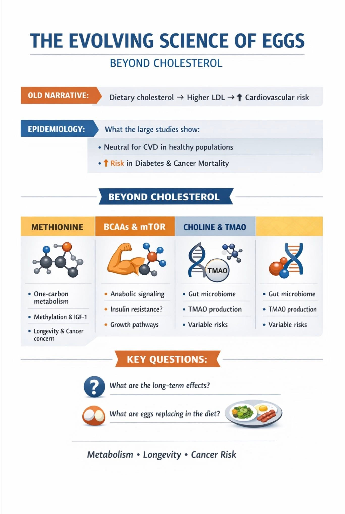
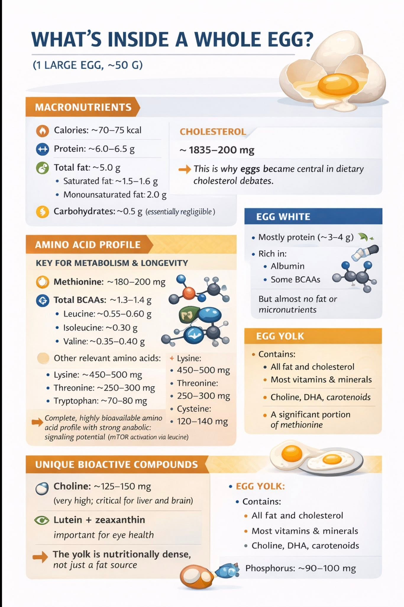
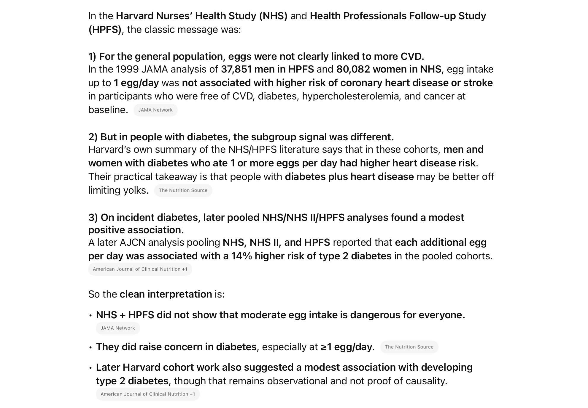
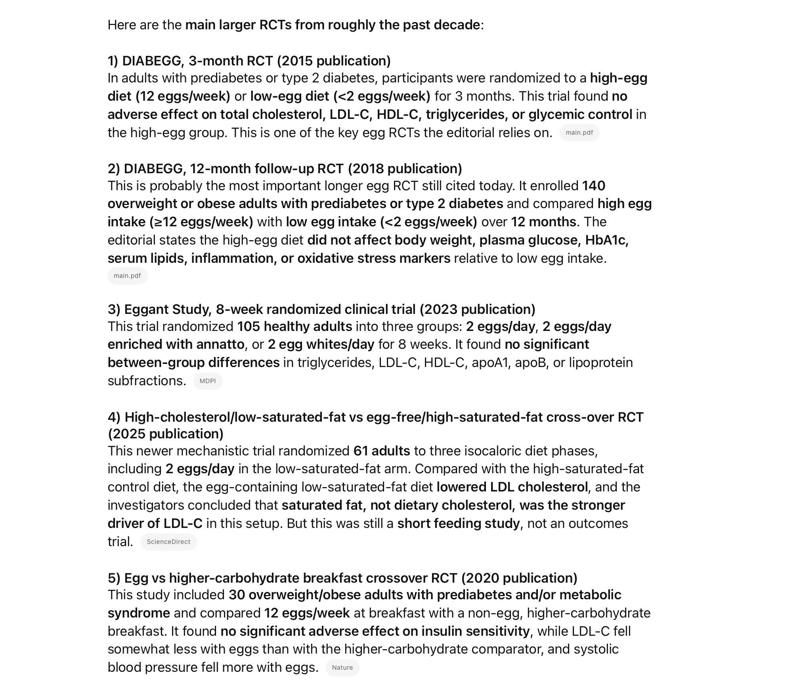

In long term studies, eggs are neutral.
#eggsHD
For decades, eggs were reduced to one thing: cholesterol.
The narrative was simple:
dietary cholesterol → higher LDL → higher cardiovascular risk.
But that framework was always incomplete.
A recent AJCN editorial argues that the case against eggs was overstated. Large prospective cohorts do support part of that argument: in generally healthy populations, moderate egg intake has often shown a largely neutral association with cardiovascular disease, including in the major Harvard cohorts and later pooled analyses.
But that is not the end of the story.
Focusing only on cholesterol — or even only on saturated fat — misses a deeper layer of metabolic biology.
Eggs are not just:
- ~200 mg cholesterol
- ~1.5 g saturated fat
They are also:
- rich in methionine
- a relevant source of BCAAs, especially leucine
- high-quality, highly bioavailable protein
- rich in choline, with possible implications for the TMAO pathway
Why does this matter?
Because these nutrients interact with pathways that are central to aging, cancer biology, and metabolic disease.
🔬 Methionine
- supports one-carbon metabolism
- influences methylation and redox balance
- methionine restriction extends lifespan and suppresses tumor growth in multiple experimental models
💪 BCAAs, especially leucine
- activate mTOR
- promote anabolic signaling
- chronically elevated BCAA-related signaling has been linked to insulin resistance and other metabolic disturbances
🧬 This is also relevant to cancer biology
The concern is not that eggs “cause cancer” in any simple way.
The concern is that a food rich in methionine and anabolic amino acids may, at least theoretically, reinforce nutrient-sensing pathways such as mTOR that are deeply involved in cell growth and proliferation.
And this is where the epidemiology becomes interesting.
The large cohort data are broadly reassuring for cardiovascular disease in healthy people, but they are not uniformly reassuring in everyone. Signals have often looked less favorable in people with diabetes or broader cardiometabolic vulnerability. And recent umbrella-review evidence has reported a weak observational signal for cancer mortality, even though the overall certainty of that evidence remains low.
So the real question is not:
Are eggs good or bad?
The real question is:
👉 What is the net effect of egg consumption on longevity pathways over time?
👉 And what are eggs replacing in the diet?
Because that context changes everything.
- Eggs replacing refined carbohydrates → likely beneficial
- Eggs replacing ultra-processed breakfast foods → probably favorable
- Eggs replacing legumes → less attractive from a longevity perspective
- Eggs consumed with processed meat in a Western dietary pattern → entirely different biological context
From a clinical and longevity perspective, eggs are best understood as a nutrient-dense but metabolically active food.
That means:
🥚 not just “bad because of cholesterol”
⚖️ probably reasonable in moderation for many healthy people
⚠️ but still worthy of caution in people with metabolic disease, and not irrelevant to cancer biology simply because the cholesterol story has weakened
The mistake of the past was reducing eggs to cholesterol.
The mistake now would be to assume the problem is solved.
It isn’t.
We have moved from a simplistic lipid hypothesis to a more complex systems biology framework — involving amino acids, mTOR, metabolism, host susceptibility, and long-term disease risk.
That is the conversation we should be having.
#Nutrition #Longevity #Metabolism #mTOR #CancerBiology #PreventiveMedicin




